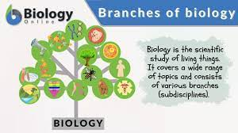
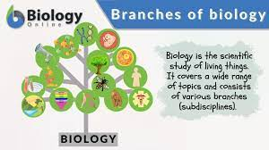

Results of "Biology"
the study of living organisms, divided into many specialized fields that cover their morphology, physiology, anatomy, behaviour, origin, and distribution.
The science of biology was invented by Aristotle (384–322 BC). Before Aristotle, many Greek philosophers had speculated about the origins of the Earth and of Life, but their theorizing was unsupported by empirical investigation.
The word 'Biology' is derived from the Greek words 'Bios' meaning (life) and 'logos' meaning (Study) and defined as the science of life and living organisms.
Biology is the scientific Study of life. It is a natural science with a broad scope but has several unifying themes that tie it together as a single, coherent.
The study of Biology helps us understand the living world and the ways many living species function, evolve and interect. Many other areas of biology have brought improvements in the quality of life.
Example : Medicine, agriculture.
 

looks like you've reached the end...